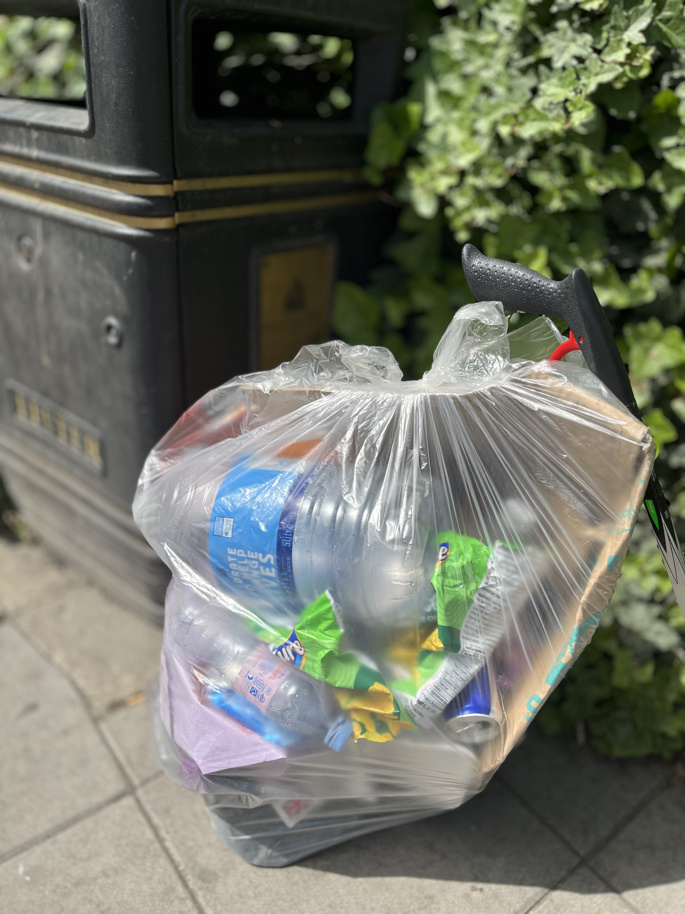
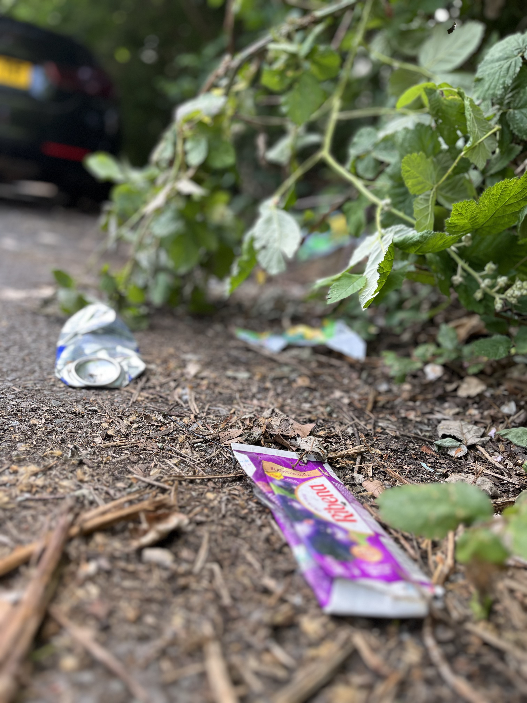

Step 1
Tell us about your ISOC
Share your university, expected team size and the kind of clean-up or challenge you want to run.
View the challenge
Bring your campus together for a clean-up challenge that combines service, teamwork and measurable impact.
A simple three-step process to help your ISOC turn interest into a well-run campus clean-up.
Share your university, expected team size and the kind of clean-up or challenge you want to run.
View the challenge
We help you think through volunteers, routes, safety, promotion and how your team will log its impact.

Once your team is ready, we provide the resources that make your clean-up easier to organise, promote and measure.
Clear next steps for joining the challenge and running your first campus clean-up.
Guidance for choosing a sensible route, briefing volunteers and keeping the session organised.
Support with posters, graphics and launch copy so students know how to get involved.
Simple ways to record bags collected, volunteer numbers and clean-up activity.
Help turning your clean-up results into visible progress for your ISOC and university.